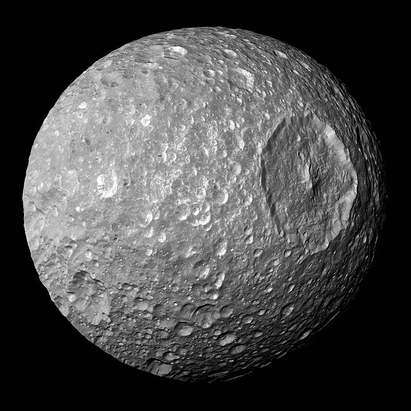

COSMIC COINCIDENCES
Sometimes the universe likes to troll.
-
The sun is 400 times larger than the moon and 400 times farther away.
Consequently they look like they're the same size. They weren't always this way and won't always be. I imagine this messed with our understanding of the universe for a hundred thousand years or so.
-
The 18th century Titius-Bode law stated that planets tend to orbit twice as far away as the next planet in. This was roughly true for Mercury through Saturn (the then-known planets) and correctly predicted the existence of the large asteroid Ceres and of Uranus, both discovered after the law was proposed.
But it fell apart with Neptune and Pluto and is in fact just a funny coincidence.
-
Clyde Tombaugh, discoverer of Pluto, was searching that area of the sky expecting to find a planet because observations of Neptune's orbit suggested there was something big there.
The math was based on totally incorrect data. But there happened to be a planet there anyway. A very tiny planet far smaller than predicted. But we didn't figure that out for years.
-
At precisely the time we were technically capable of building effective space probes, the four outer planets lined up for us.
This alignment made Voyager 2's so called Grand Tour possible and exploded our understanding of the solar system. The last time it happened we hadn't invented the train. It won't happen again until 2150ish.
-
Apollo 13 really was unlucky.
Sigh. The accident happened on April 13 in American timezones too.
-

Three years after the first Star Wars gave us the iconic Death Star space station (small moon?), Voyager 1 gave us our first look at this small moon of Saturn.
That's no moon. Wait, yes it is. It's Saturn's tiny moon Mimas.